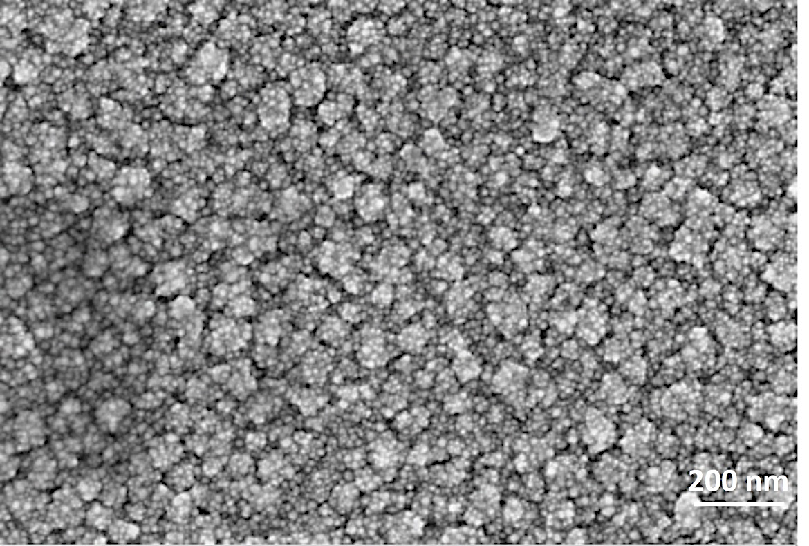
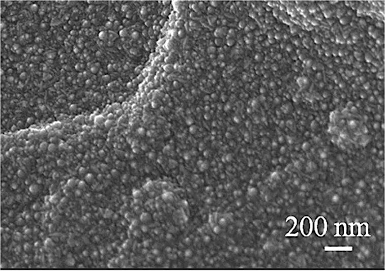
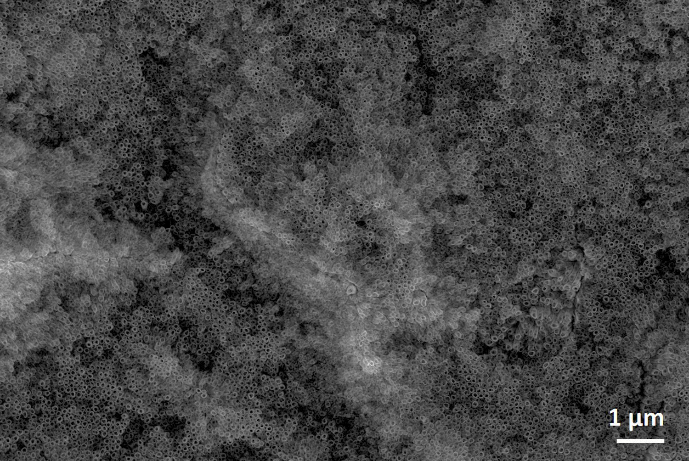

Atomic layer deposition (ALD) is a thin-film deposition method in which a film is grown on a substrate by exposing its surface to alternate gaseous species (typically referred to as precursors). In each of these pulses the precursor molecules react with the surface in a self-limiting way, so that the reaction terminates once all the reactive sites on the surface are consumed.
Consequently, the maximum amount of material deposited on the surface after a single exposure to all of the precursors (a so-called ALD cycle) is determined by the nature of the precursor-surface interaction. By increasing the number of cycles it is possible to grow materials uniformly and with high precision on arbitrarily complex and large substrates.
ALD is considered to be a low temperature deposition method with great potential for producing very thin, conformal films with control of the thickness and composition of the films possible at the atomic level. ALD allows for the deposition on a different number of substrates including glass, metals and polymers.
Research conducted by the CNR resulted in the successful synthesis of TiO₂ nanolayers on polymers, namely Poly methyl methacrylate (PMMA). This novel composite combines the high photocatalytic activity of TiO₂ together with the transparency, chemical stability and low cost of PMMA. This increases the number of potential applications of photocatalytic surfaces. In this project CNR synthesised TiO₂ and ZnO nanolayers on silica, quartz and PMMA and assessed their suitability for treating greywater.
The anodising process involves anodic oxidation of a material amenable to the formation of a surface oxide film using a suitable liquid medium. The application of a potential causes thickening of a pre-existing, naturally formed oxide layer. Anodisation has also proven to be a particularly flexible process by which nanostructured TiO₂ photocatalysts can be synthesised.
The formation of nanotubes is desirable as their formation increases greatly the effective surface area. The nanotube arrays are obtained through a series of reactions, mainly the field assisted oxidation of titanium and the field assisted dissolution of the oxide formed. In the first few minutes of the process a uniform oxide film is formed on the surface of the sample. This oxide layer is then etched due to the presence of fluoride ions in the electrolyte and remodelled through dissolution. The growth of the film and its etching occur simultaneously, thus forming long nanotubes, a process only possible in the presence of fluoride ions.
The supported nanotubes offer a high surface area and correspondingly high photocatalytic activity. The use of photocatalytic coatings removes the need for laborious removal of the nano TiO₂ powders from the treated water. The UM team has produced four different morphologies of TiO₂ nanotubes.

TiO₂ nanolayer on quartz

ZnO nanolayer on PMMA

TiO₂ Nanotube Arrays